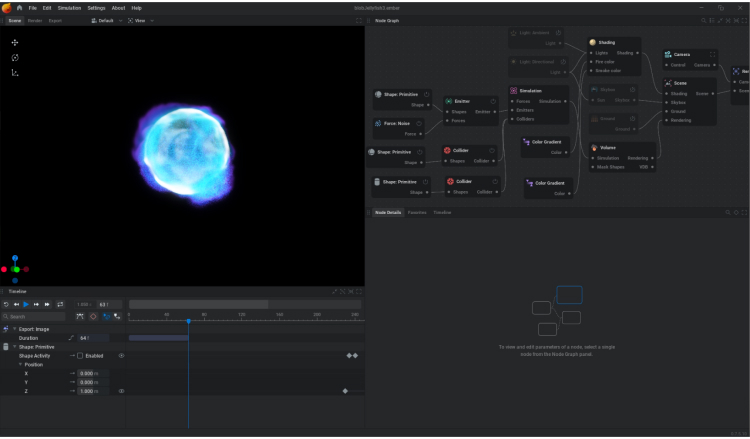
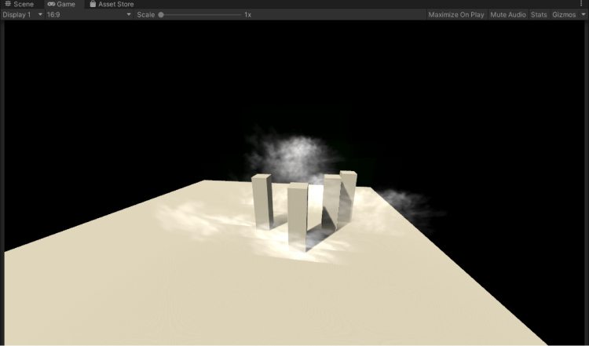

Testing Simulations
I first started with getting used to EmberGen and how the simulations would work. This involved going through some of the preset simulations provided by JengaFX, and by going through some of the livestream tutorials where they demoed the software.
To practice my skills, I would look for various different examples of smoke, fire, and VFX in general, and try to think and tackle simulating them. This involved some trial and error, and by systemically changing various values and observing how much was changed, I quickly improved my understanding and work process within the software.

After making a few smoke and cloud effects, I imported them into Unity to see how they might look in a game. To test out the atmospheric clouds, I blocked out some building shapes to get a sense of how it would look, and how I could simulate depth.
Alongside the smoke and cloud effects, I was also trying to recreate a fire vortex based off of a reference image I found. The vortex was built using Unity's Particle System and flipbooks to create an animated rotating effect.

After creating the fire vortex, I spent some time in between tasks experimenting around with the capabilities of the software and trying my hand at making a few renders. This was quite experimental, but I had fun playing around and making some random effects.
Results
I enjoyed using EmberGen to create VFX because it felt a bit like a science experiment - explosions! The process of experimentation was fun because I would input random settings then get interesting and unexpected results, which I would then refine into something I liked. I also learnt about flipbooks and how they can be used to create animations in Unity.